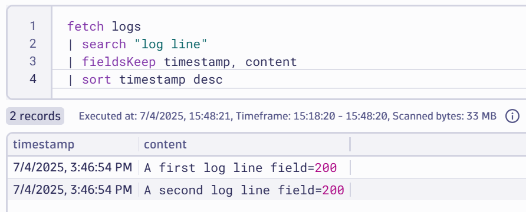
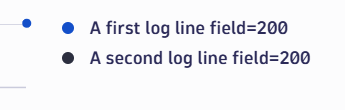
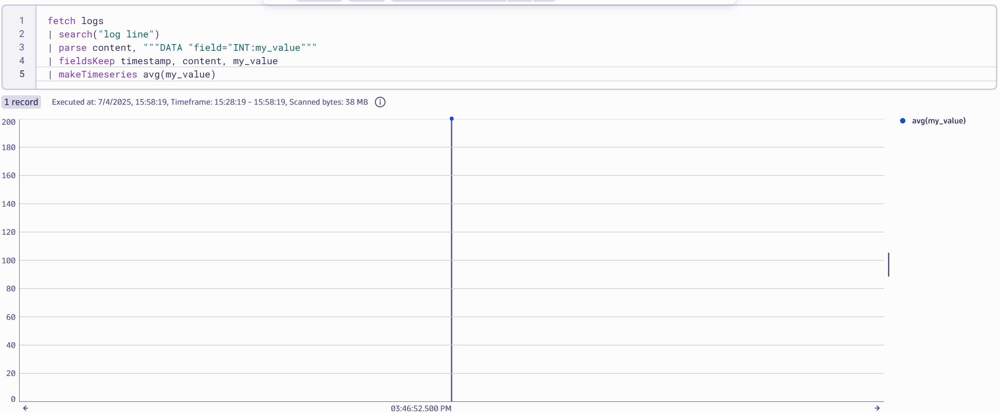
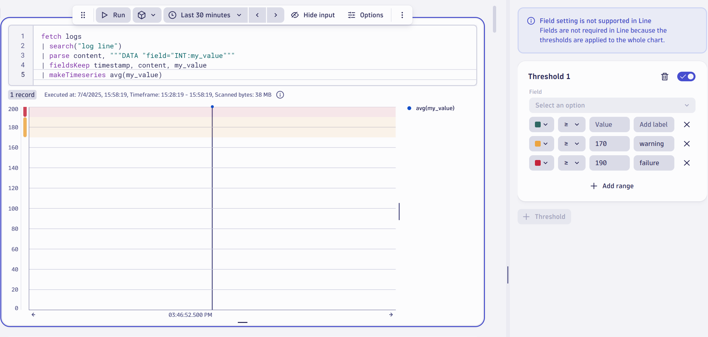
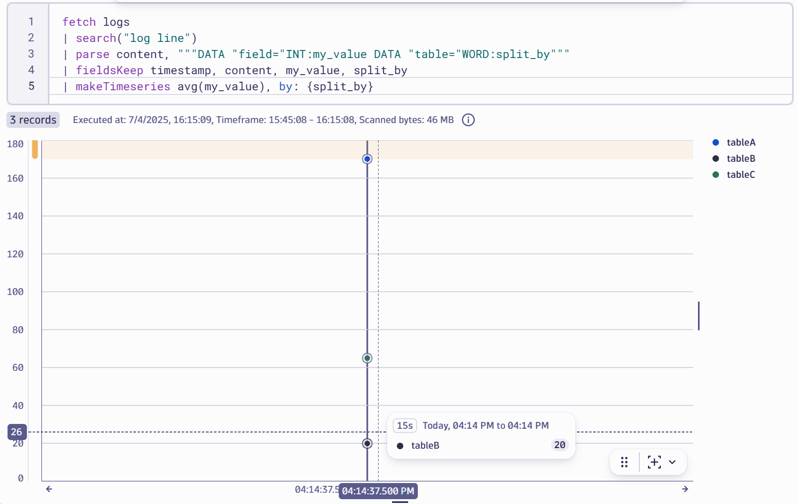

Transform Logs to Metrics#
Often there are numerical values in log lines that you'd like to extract and chart as a timeseries.
Simple Parsing#
Take this log line for example: A log line field=200
You'd like to extract 200 and use that value.
scenario11.yaml shows the base OpenTelemetry collector configuration we'll use during this exercise. Notice that beyond some host / operating system enrichment and batching, the telemetry is not altered in any way before it hits Dynatrace.
Stop Previous Collector#
If you haven't done so already, stop the previous collector process by pressing Ctrl + C.
Start Collector#
Run the following command to start the collector:
source /workspaces/$RepositoryName/.env
/workspaces/$RepositoryName/dynatrace-otel-collector --config=/workspaces/$RepositoryName/scenario11.yaml
Generate Log Data#
Open file.log file and add these log lines then save the file.
A first log line field=200
A second log line field=200
View Data in Dynatrace#
Tip
Right click and "open image in new tab" to see large image

Open a new notebook (or add a DQL section to an existing notebook).
fetch logs
| search("log line")
| fieldsKeep timestamp, content
| sort timestamp desc
Click the Run button on the DQL tile. You should see the new data.
Extract the Metric#
Adjust your DQL to the following:
fetch logs
| search("log line")
| parse content, """DATA "field="INT:my_value"""
| fieldsKeep timestamp, content, my_value
| sort timestamp desc
Click the Run button again on the DQL tile. You should see a new column called my_value with the value of 200 extracted into its own field.

DQL Explained#
Let's take a minute to understand the above DQL:
First, all logs are fetched. Next, the content field is parsed. The syntax says:
- Expect some data, any data
- Eventually you should find a literal string
field= - Immediately after the
=, expect an integer. Extract it as a standalone field and name the fieldmy_value.
Then, of all the data you have, keep only the timestamp, content and my_value fields.
Finally, sort the log lines in descending timestamp order (most recent at the top).
Charting Metrics as Timeseries#
To chart the above, click the DQL panel, go to Options and change the visualization to Line.

There's a problem though, by default Dynatrace splits the timeseries based on the log line.
Using Dynatrace Query Language, you can tell Dynatrace to treat all my_value results as coming from a single source (ie. do not split by the textual value of the line) and thus you get one line on the chart.
To do so, use this DQL:
fetch logs
| search("log line")
| parse content, """DATA "field="INT:my_value"""
| fieldsKeep timestamp, content, my_value
| makeTimeseries avg(my_value)
As you have probably guessed, this time we're taking average myValue and creating a timeseries entity from it. This time, there is a single timeseries (line) which is what you want.

Adding Thresholds#
Under the options for the Line chart, find the Thresholds submenu and open it.
Here you can set visual thresholds.
Set a warning threshold for any value above 170 and a failure threshold for anything over 190.

Hover over the bars on the left axis to see the labels: warning and failure.
Multiple Series Log Parsing#
Now imagine a more complex log example:
A log line field=170 table=tableA
A log line field=20 table=tableB
A log line field=65 table=tableC
We still want to extract the field value (170, 20 and 65) but this time, these values refer to different "things". Meaning the value of 170 applies to tableA, the value of 20 applies to tableB and the value of 65 applies to tableC.
Obviously, if we somehow mixed this up and applied 170 to tableC, our charting and alerts would be incorrect.
So, how can we use DQL to achieve this?
First, add these log lines to file.log and save the file:
A log line field=170 table=tableA
A log line field=20 table=tableB
A log line field=65 table=tableC
Next update the DQL as follows:
fetch logs
| search("log line")
| parse content, """DATA "field="INT:my_value DATA "table="WORD:split_by"""
| fieldsKeep timestamp, content, my_value
| makeTimeseries avg(my_value), by: {split_by}

Dynatrace has extracted the values and grouped by the split_by field. In other words, grouped by the table name.